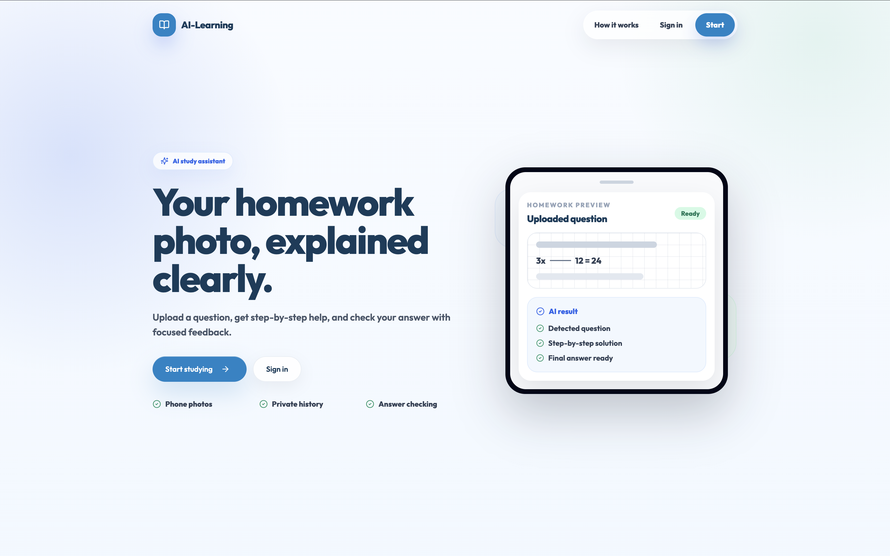
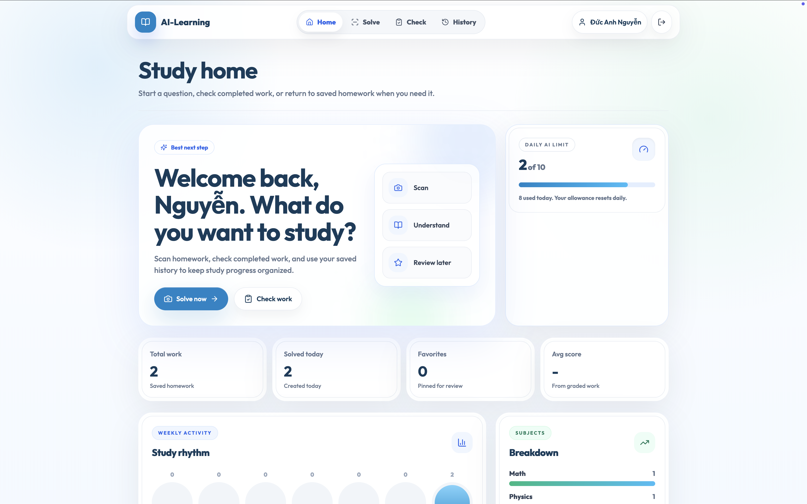
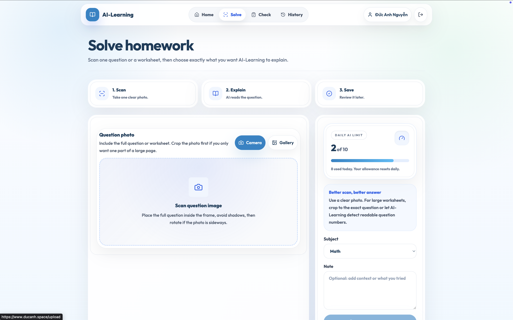
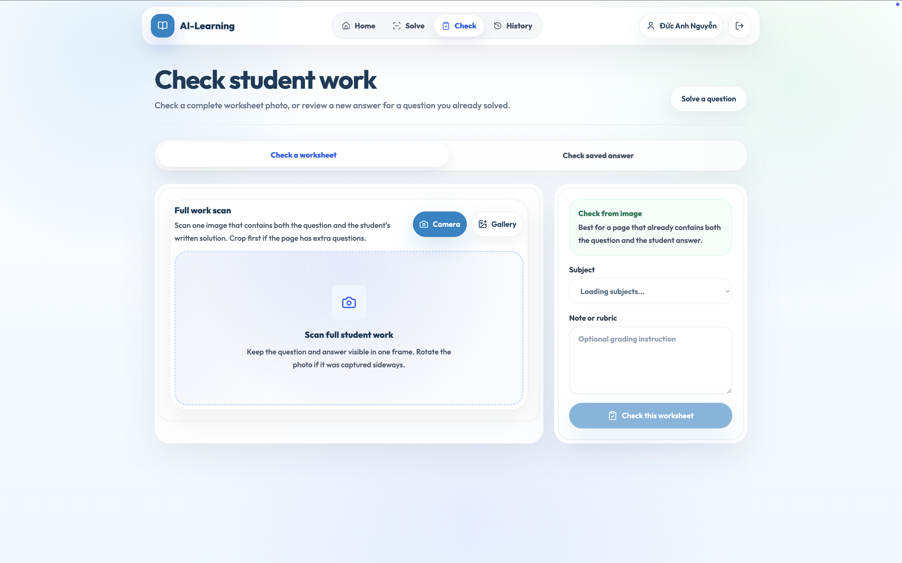
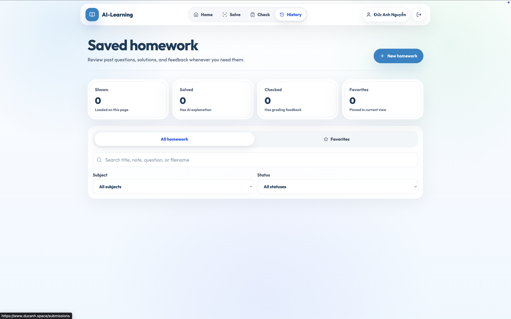
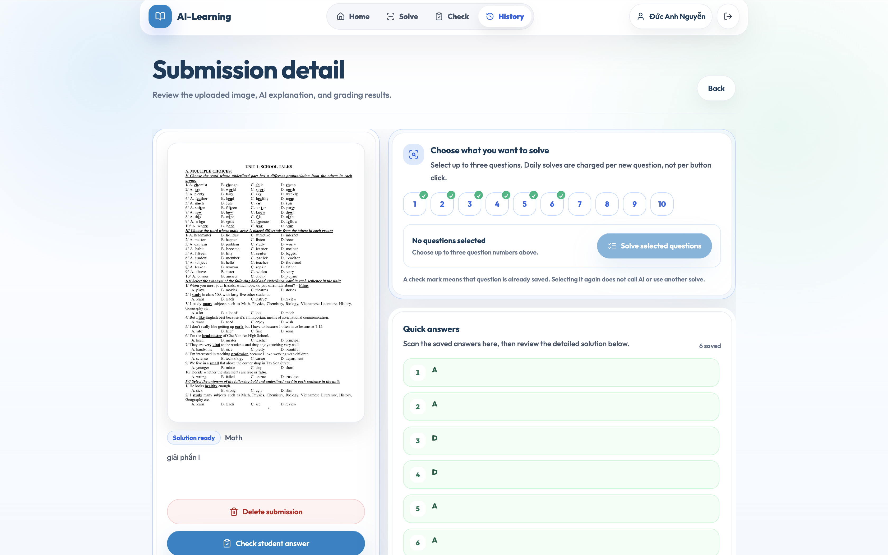
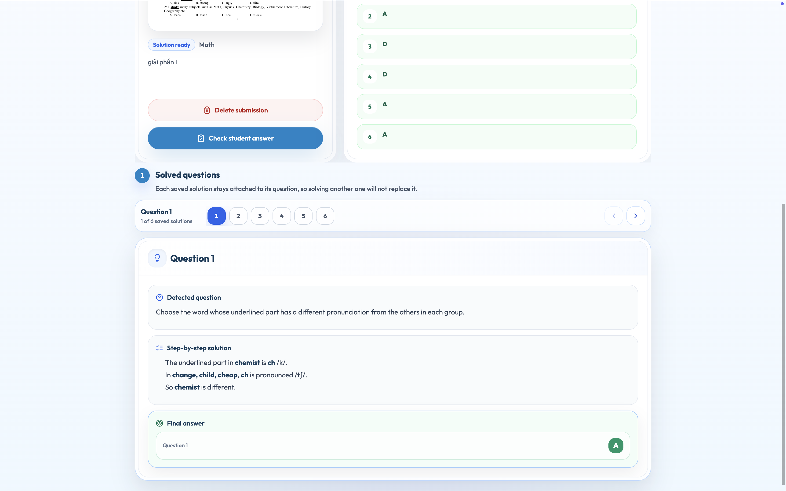

Public Landing
Explains the core value: upload homework photos, receive step-by-step help and check answers.
Project Detail
AI Study Assistant
A secure Spring Boot backend for homework uploads, AI feedback, response validation and study history.
The Problem
Students need fast feedback on homework, but image uploads, AI responses, grading history and user privacy require more than a simple prompt wrapper.
The backend needed clear ownership checks, resilient OpenAI integration, consistent error mapping and API documentation for frontend collaboration.
Project Interface

Public landing page and authenticated product screens from AI-Learning.
Product Flow Screens

Study Home
Entry point for solve, check, review later and saved homework workflows.

Solve Homework
Question upload, subject selection and guidance before AI processing.

Check Student Work
Worksheet scan flow for grading complete answers and rubrics.

Saved Homework
Search, filter and revisit solved or checked submissions.

Submission Detail
Review detected questions, quick answers and uploaded worksheet context.

Solved Question
Step-by-step explanation stays attached to each saved question.
The Solution
The service uses JWT authentication with RBAC, BCrypt password hashing and ownership checks before accessing user study data.
OpenAI calls are wrapped with structured prompts, timeout handling, usage logging, response validation and predictable service-layer exceptions.
Client
Homework image upload and study history requests through documented REST endpoints.
Spring Boot API
Security filters, controllers, services, validation and error mapping.
Data and AI
PostgreSQL persistence, Cloudinary media storage and OpenAI response generation.